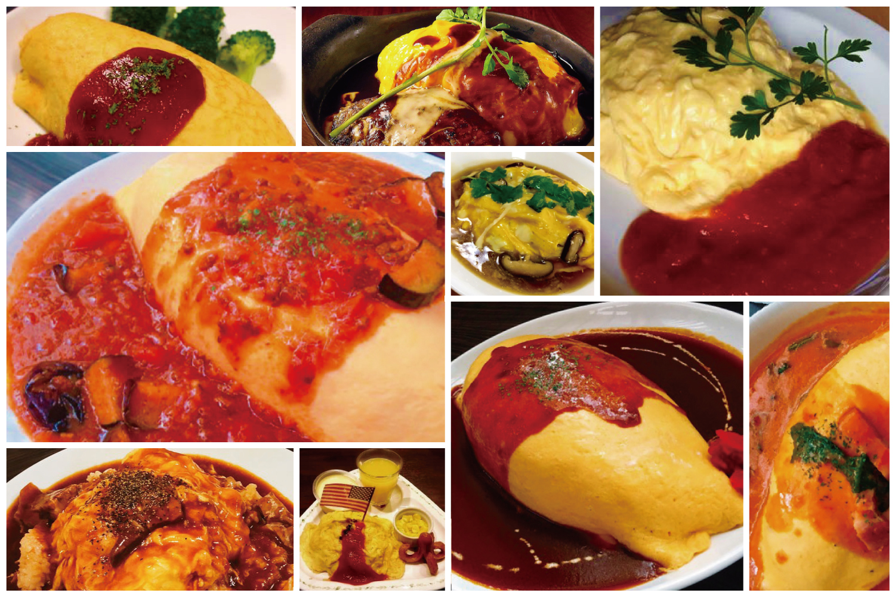
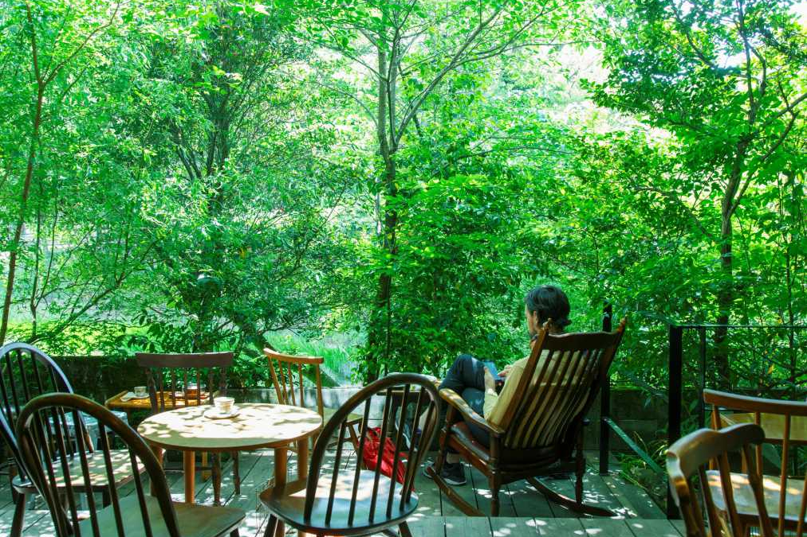

お知らせ
| 2021.07.17 | グルメ・旅行・おでかけ情報サイト『jouer』に掲載されました。 |
|---|---|
| 2021.06.20 | 夏季限定『ナスとトマトのオムライス』始めました。 |
| 2021.05.01 | 「オムライスの森」がオープンしました。ここ栃木県壬生町で皆さんが気軽に立ち寄れる、ゆったりと時間を過ごせる落ち着いた場所にしたいと思っています。 |
オムライスの森の特徴
栃木県産の高級卵を使用
当店では、栃木県の「卵明舎」の卵「魔法卵GOLD」を使用しています。旨味と甘み、コクがあって驚くほど膨らむ当店こだわりの卵です。一般卵と比較すると生卵でなんと、2,3倍以上のコクがあることが分かりました。また、卵白の起泡性が高いので焼いた時のふんわりとした膨らみは格別。

種類豊富なオムライス
お食事は様々な種類のオムライスをご用意しており、オムライス好きな人はもちろん、そうでない人でもメニュー選びを楽しんでもらえると思います。旬の食材を使った季節限定メニューもあります。

緑に包まれた贅沢ロケーション！
店内では、みずみずしい緑に包まれまるで森林浴をしているかのような気分に浸りながらお食事やカフェタイムを楽しめます。さらに、テラス席では栃木県壬生町の森林による絶景を一望でき、癒しあふれるくつろぎの時間を過ごせます。